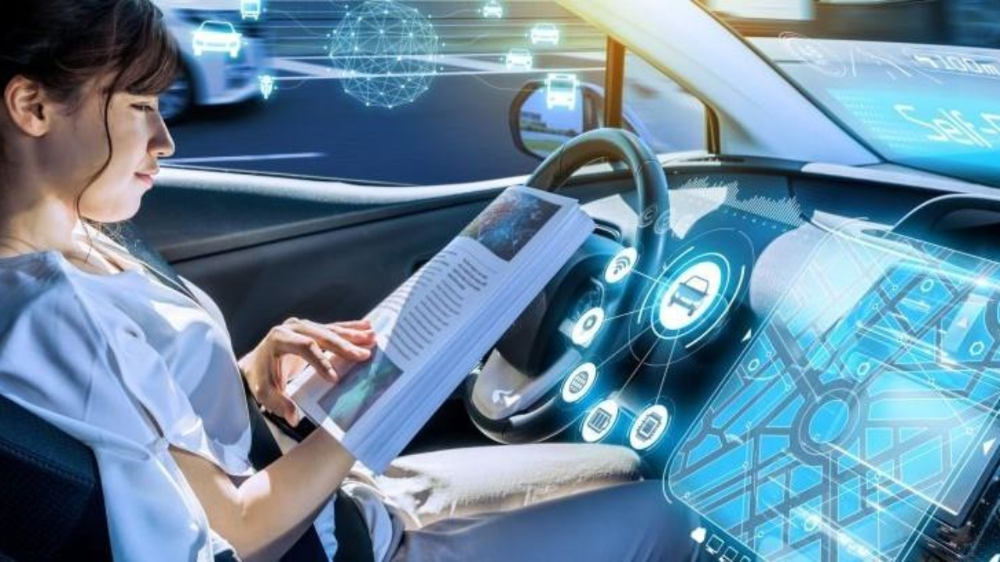
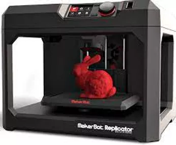
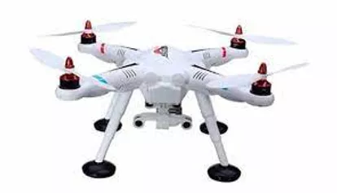

NUEVAS TECNOLOGÍAS 2020-2021
Blockchain
Blockchain es un libro mayor compartido e inalterable que facilita el proceso de registrar transacciones y rastrear activos dentro de una red empresarial. Un activo puede ser tangible (una casa, un coche, dinero en efectivo, terrenos) o intangible (propiedad intelectual, patentes, derechos de autor, marcas). Prácticamente cualquier cosa de valor puede ser rastreada y comercializada en una red blockchain, reduciendo el riesgo y los costos para todos los involucrados.
Autos autónomos
Es un vehículo capaz de imitar las capacidades humanas de manejo y control. Como vehículo autónomo, es capaz de percibir el medio que le rodea y navegar en consecuencia. El conductor podrá elegir el destino, pero no se le requiere para activar ninguna operación mecánica del vehículo. Los vehículos perciben el entorno mediante técnicas complejas como láser, radar, lidar, sistema de posicionamiento global y visión computarizada. Los sistemas avanzados de control interpretan la información para identificar la ruta apropiada, así como los obstáculos y la señalización relevante. Los vehículos autónomos generalmente son capaces de recorrer carreteras previamente programadas y requieren una reproducción cartográfica del terreno, con lo cual si una ruta no está recogida por el sistema se puede dar el caso que no pueda avanzar de forma coherente y normal.
Impresora 3D
Una impresora 3D es una máquina capaz de realizar réplicas de diseños en 3D, creando piezas o maquetas volumétricas a partir de un diseño hecho por ordenador. Surgen con la idea de convertir archivos de 2D en prototipos reales o 3D. Comúnmente se ha utilizado en el prefabricado de piezas o componentes, en sectores como la arquitectura y el diseño industrial. En la actualidad se está extendiendo su uso en la fabricación de todo tipo de objetos, modelos para vaciado, piezas complicadas, alimentos, prótesis médicas (ya que la impresión 3D permite adaptar cada pieza fabricada a las características exactas de cada paciente).
Automatización de procesos Robóticos (RPA)
Un drone es un vehículo aéreo no tripulado (VANT por sus siglas en español). Los drones se manejan con control remoto (tipo joystick) o a través de aplicaciones para smartphones o tablets. Actualmente hay diferentes app desarrolladas para iOS, Android y hasta Linux para pilotear un drone, sacar fotos y filmar.
Seguridad de datos o ciberseguridad
La seguridad informática, también conocida como ciberseguridad, es el área relacionada con la informática y la telemática que se enfoca en la protección de la infraestructura computacional y todo lo vinculado con la misma, y especialmente la información contenida en una computadora o circulante a través de las redes de computadoras. Para ello existen una serie de estándares, protocolos, métodos, reglas, herramientas, y leyes concebidas para minimizar los posibles riesgos a la infraestructura y/o a la propia información. La ciberseguridad comprende software (bases de datos, metadatos, archivos), hardware, redes de computadoras, y todo lo que la organización entienda y valore como un riesgo si la información confidencial involucrada pudiera llegar a manos de otras personas, por ejemplo, convirtiéndose así en información privilegiada.
Telefonía móvil 5G
En telecomunicaciones, 5G son las siglas utilizadas para referirse a la quinta generación de tecnologías de telefonía móvil. Es la sucesora de la tecnología 4G la cual le provee conectividad a la mayoría de teléfonos móviles actuales. De acuerdo a la Asociación GSM, para 2025, se prevé que las redes 5G contarán con más de 1.7 mil de millones de subscriptores en el mundo. Como su predecesor, las redes 5G son redes de celdas, cuya área de servicio está dividida en pequeñas regiones geográficas que llevan como nombre celdas. Todos los dispositivos 5G inalámbricos en una celda están conectados a Internet y a la red telefónica por ondas de radio mediante una antena de la celda.